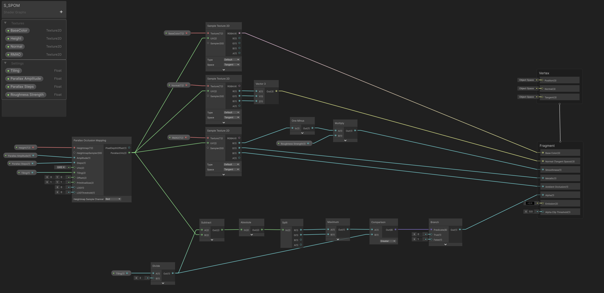
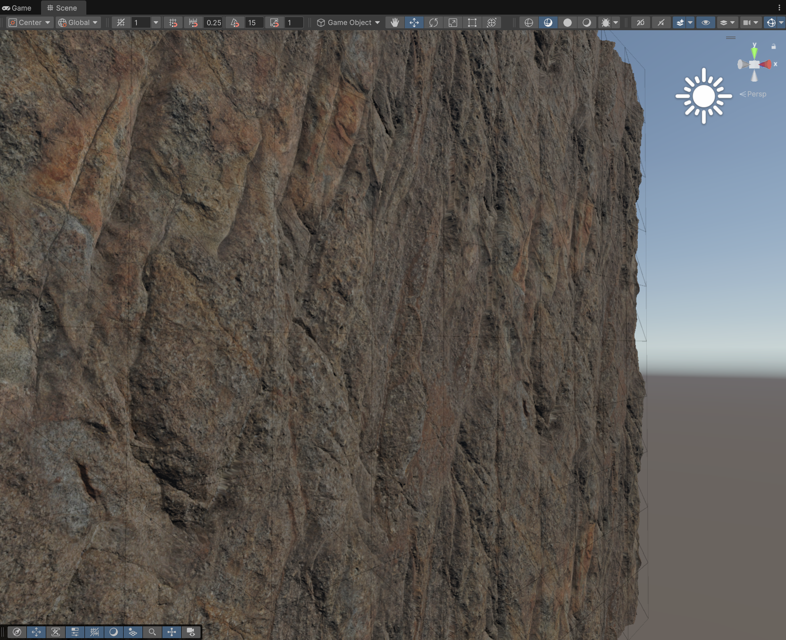

For my experiment, I used the Thai Rock Cliff asset downloaded from the Megascans library. Since saving texture memory is crucial in Unity, I didn't import the single-channel masks as separate files. Instead, I packed them into a single RMAO texture using Substance Designer.
I am aware that importing and exporting Megascans assets often comes with significant color space issues, such as Linear vs sRGB discrepancies, shifted intensity values, or various gamma encodings that usually require parsing the accompanying JSON file or the image EXIF data to resolve accurately. However, since my primary goal here was specifically to test the functionality and logic of the SILPOM shader, I bypassed these fine-tuning steps for now.

UV Clipping, Dynamic Tiling
POM shifts the UV coordinates based on the view direction, but this apparent depth effect has a typical drawback. When reaching the edges of the texture, the shifted coordinates drift outside the designated [0,1] range causing ugly, stretched pixel streaks along the geometric boundaries. To resolve this, I implemented the mathematical logic shown at the bottom of my shader.
First, I divide the Tiling parameter by two, which marks the center of the sampling range as
well as the maximum allowed deviation. I subtract this half-tiling value from the already shifted ParallaxUVs coordinates,
then take the absolute value of the difference to determine the actual distance from the center.
Next, I split the U and V axes and find which direction has the larger deviation.
If this maximum deviation exceeds the allowed half-tiling threshold, the Branch node outputs a value of 0,
otherwise it outputs 1. Feeding this value directly into the Alpha input of the Fragment master node where the Alpha Clip
Threshold is set to 0.5, it automatically discards any pixels where the value drops to 0.

This mathematical approach is highly practical because it dynamically adapts to changes in Tiling.
If Tiling is set to exactly one, the boundaries remain in the standard 0 to 1 range with a midpoint of 0.5,
meaning any drift outside this range is immediately clipped from the surface.
However, if I increase the Tiling value to 2 or more, the clipping boundaries automatically expand thanks to the division by two.
The system still crops with great accuracy at the edges of the repeated texture tiles, entirely eliminating the need to manually adjust
clipping thresholds.
Optimization
While the solution works visually, it is important to emphasize that this shader is currently just an unoptimized prototype
created solely to verify the visual concept. The built-in POM node uses a fixed step count,
which in practice should scale dynamically based on camera distance and view angle.
Glancing angles require more steps for an accurate illusion, while looking at the surface perpendicularly requires almost no calculations.
Furthermore, from a distance, the parallax effect is no longer noticeable but continues to drain GPU performance. For larger distances,
introducing a proper LOD-based fallback or switching to basic normal/bump mapping would be highly beneficial,
not to mention further refining the branching logic to prevent unnecessary calculations.
